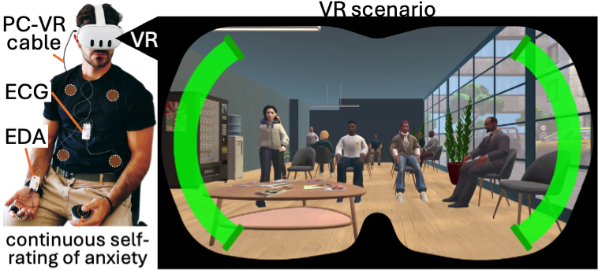
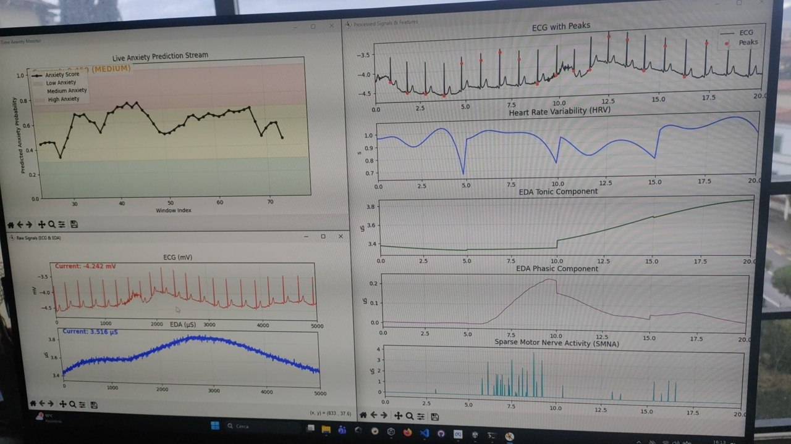
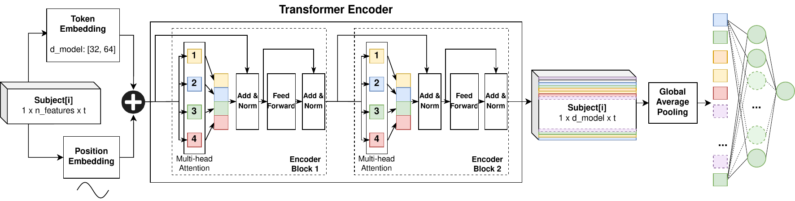
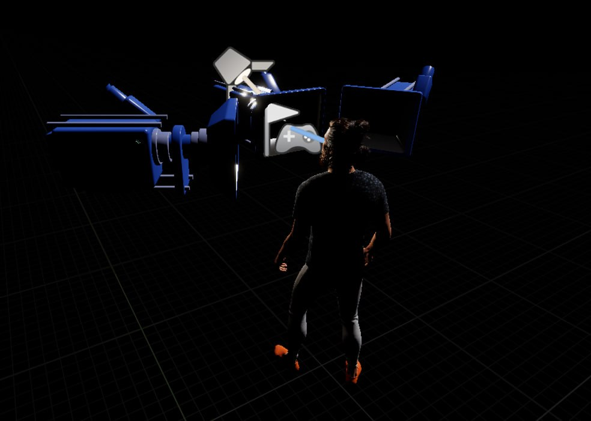
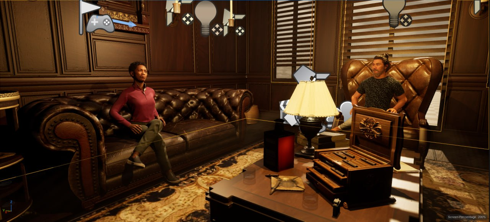
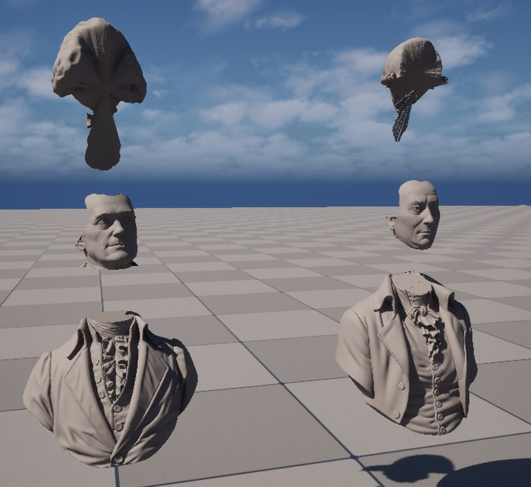
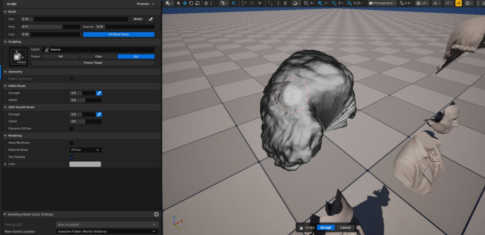
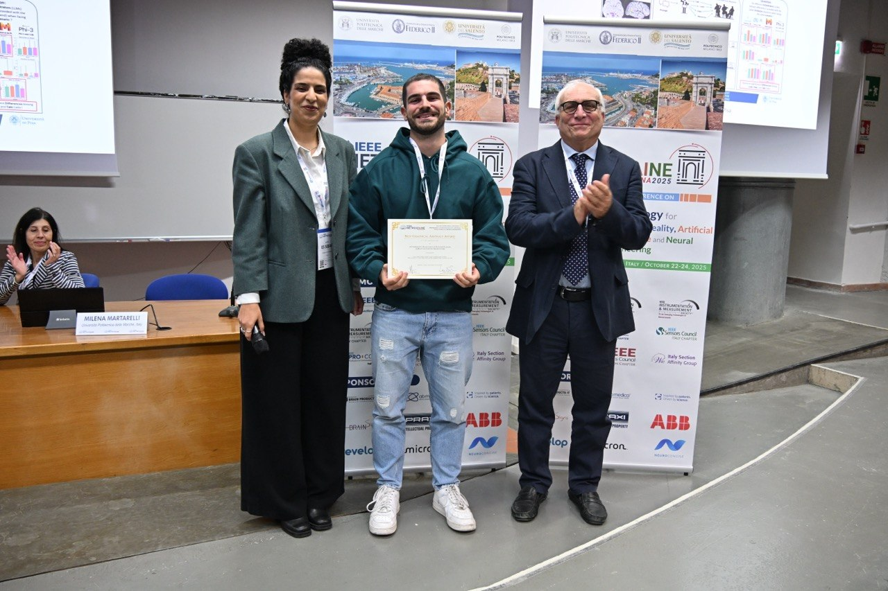

About
My research bridges Artificial Intelligence and Robotics, with the goal of making humanoid robots hyper-realistic in real time — with a particular emphasis on facial control.
I use Unreal Engine for high-fidelity simulation and biosignals to decode human emotional states. My aim is to embed this emotional awareness into cognitive architectures, so that people can interact with robots that genuinely understand and respond to the emotional state of their interlocutor.
Education
Education
PhD in Smart Industry
Nov 2024 – PresentUniversity of Pisa
M.Sc. in Artificial Intelligence & Data Engineering
2022 – 2024University of Pisa · 110/110 cum laude
Thesis: Service-Oriented Cognitive System for Social Robotics orchestrated by LLMs
B.Sc. in Computer Engineering
2019 – 2022University of Pisa · 110/110 cum laude
Groups & Affiliations
Where I work
My PhD sits at the interdisciplinary crossroads of Computer Engineering and Biomedical Engineering, jointly supervised by Prof. Mario Cimino and Prof. Alberto Greco. Prof. Cimino leads research in deep learning, explainable AI, computer vision, and cognitive architectures; Prof. Greco is a leading expert in electrodermal signal analysis and affective computing. Working at the intersection of these two domains, I apply deep learning and computer vision directly to robotic platforms — bridging cognitive AI and physiological affective response.
MLPI Group
Machine Learning & Process Intelligence Group, Pisa
Centro Piaggio
Affiliated Researcher
BRAVE Project
Project Member
Research · Portfolio
Cognitive Humanoid Robotics
I work directly with hyper-realistic humanoid platforms, focusing on real-time control, collision avoidance, and facial retargeting to create believable interactions.
Abel is a new-generation hyper-realistic humanoid, conceived as a research platform for social interaction, emotion modeling, and embodied intelligence. Resembling an 11–12 year old boy, Abel is a collaboration between the University of Pisa and Gustav Hoegen (Biomimic Studio, London). It comprises a head and upper torso driven by 42 high-end servo motors (Futaba, MKS, Dynamixel); the head alone houses 21 motors dedicated to facial expressions, gaze, and speech simulation. It is equipped with a torso camera, binaural microphones, and an internal speaker.
Seth, born from the same collaboration, relies on an array of 13 Dynamixel servo motors that grant precise control over its intricate facial movements. I began by entirely rewriting Abel's control and movement architecture from scratch on ROS 2, driving the body with MoveIt for motion planning and collision avoidance and prototyping in Gazebo. Now, leveraging Seth's mechanical precision, I use deep learning for real-time, high-fidelity facial retargeting — pushing the boundaries of human–robot affective interaction.
Abel and Seth — the hyper-realistic humanoid platforms I work with.
Left — Abel performing real-time collision avoidance with MoveIt. Right — Seth's real-time facial retargeting of a talking person (work in progress).
Research · Portfolio
Affective Computing & Biosignals
In our work on continuous assessment of Social Anxiety Disorder (SAD) in Virtual Reality, we integrate continuous self-ratings with objective physiological data (ECG / EDA). Our Late-Fusion Transformer framework classified high- and low-anxiety groups with an F1-score of 0.853 and 82.5% accuracy.
We are now tackling the harder problem of multivariate continuous regression — mapping dynamic, in-the-moment physiological signals directly to the user's fluctuating emotional state.


Left — the sensor setup and VR scenario. Right — the real-time interface turning ECG/EDA into features and anxiety levels.
Live, real-time anxiety detection during the VR experience (fast-forwarded 8×).

The Late-Fusion Transformer encoder architecture behind the multimodal classification.
Research · Portfolio
Unreal Engine & MetaHumans
Reviving historical figures begins with high-density point clouds, meticulously converted into workable static meshes inside Unreal Engine. Advanced grooming tools recreate fine details, followed by rigging the models to the MetaHuman framework.
These digital avatars can then be projected into physical Holoboxes. Displaying a MetaHuman holographically requires a multi-camera setup in Unreal Engine, rendering the same subject from several angles simultaneously to construct a seamless 3D illusion.
Holographic projection — AOI & ADA

The Holobox pipeline shown together: the multi-camera rig (left) renders the subject three times at different angles (center) to project correctly inside the Holobox itself (right).

AOI and ADA — MetaHumans looking around the scene.
Reviving historical figures — Mazzei & Jefferson


Left — static meshes extracted from point clouds in Unreal Engine. Right — grooming Jefferson's hair.
The final animated MetaHumans — Mazzei (left) and Jefferson (right).
Publications
Publications
Award
Featured award

Best Graphical Abstract
Awarded at IEEE MetroXraine 2025 for the graphical abstract of our work on cognitive architectures and extended reality.
Projects